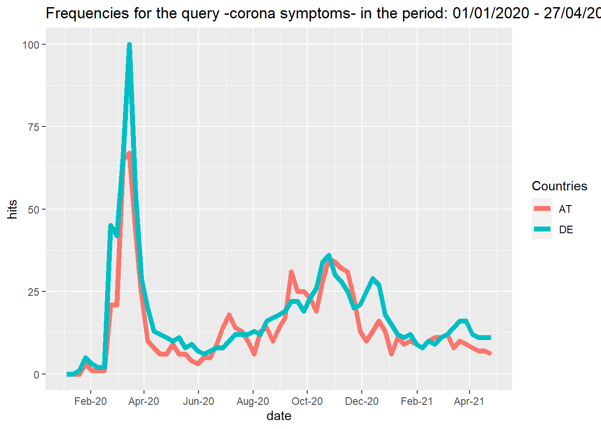

Chapter 9 GoogleTrends API
9.1 Provided services/data
- What data/service is provided by the API?
The API is provided by Google.
With Google Trends, one gets access to a largely unfiltered sample of actual search topics (up to 36h before your search) and a filtered and representative sample for search topics older than 36 hours starting from the year 2004. The data is anonymized, can be obtained from different Google products like “Web search,” “News,” “Images,” “Shopping” and “Youtube,” can be filtered by different categories to get the data for the correct meaning of the word, and is aggregated, which means that the searches of all cities/regions are aggregated to the federal state level, country level or world level. The results you get are a standardized measure of search volume for single search terms, a combination of search terms using operators (see table below), or comparisons (one input in relation to the other inputs) over a selected time period. Google calculates how much search volume in each region a search term or query had, relative to all searches in that region. Using this information, Google assigns a measure of popularity to search terms (scale of 0 - 100), leaving out repeated searches from the same person over a short period of time and searches with apostrophes and other special characters.
| No quotation marks (e.g. Corona symptoms) | You get results for each word in your query |
| Quotation marks (e.g. “Corona symptoms”) | You get results for the coherent search phrase |
| Plus sign (e.g. corona +covid) | Serves as function of an OR-operator |
| Minus sign (e.g. corona -symptoms) | Excludes word after the operator |
9.2 Prerequesites
- What are the prerequisites to access the API (authentication)?
It can be used without an API key by anyone for free directly in the internet browser (no sign up needed).
9.4 API access
- How can we access the API from R (httr + other packages)?
Example using “httr” package:
library(httr)
GET("https://trends.google.com/trends/explore",
query=list(q = "Covid",geo = "US"))- but just html-output, we recommend to use the gtrendsR package
Example using “gtrendsR” package:
# visualizing google searches for the word "corona symptoms" in
# Germany and Austria in the period 01/01/2020 - 27/04/2021
library(gtrendsR)
library(ggplot2)
library(dplyr)
data("countries") # get abbreviations of all countries to filter data
data("categories") # get numbers of all categories to filter data
# Simple call
res <- gtrends("corona symptome",geo=c("DE", "AT"))
plot(res)
- Note (1): the use of c() in the keyword argument of the gtrends function allows comparisons of up to 5 searches (separator = comma).
- Note (2): the use of the pattern ‘“xyz”’ in the keyword argument of the gtrends function corresponds to the inverted commas in the table above, all other punctuation methods in the table above can be used as indicated in the table.
#Combination using dplyr and ggplot
trend = gtrends(keyword="corona symptome", geo=c("DE", "AT"), time = "2020-01-01 2021-04-27", gprop="web")
trend_df <- trend$interest_over_time
trend_df <- trend_df %>%
mutate(hits = as.numeric(hits), date = as.Date(date)) %>%
replace(is.na(.), 0)
ggplot(trend_df, aes(x=date, y=hits, group=geo, col=geo)) + geom_line(size=2) +
scale_x_date(date_breaks = "2 months" , date_labels = "%b-%y") +
labs(color= "Countries") +
ggtitle("Frequencies for the query -corona symptoms- in the period: 01/01/2020 - 27/04/2021")
9.5 Social science examples
Google Trends can be used to predict the outcomes of elections. For example a study by (Prado-Román C (2021)) uses Google Trends data to predict the past four elections in the United States and the past five in Canada, since Google first published its search statistics in 2004. They analysed which candidate had the most Google searches in the months leading up to election day and show, that with the help of this data, all actual winners in all the elections held since 2004 could be predicted.
Another example is a study by Mavragani (2019) which uses Google Trends data to predict the results of referendums (Scottish referendum 2014, Greek referendum 2015, British referendum 2016, Hungarian referendum 2016, Italian referendum 2016 and the Turkish referendum 2017). It can be shown that the results from Google Trends data are quite similar to the actual referendum results and in some cases are even more accurate than official polls. It is argued that with the help of Google Trends data revealed preferences instead of users’ stated preferences can be analyzed and this data source could be a helpful source to analyze and predict human behavior (given areas where the Internet is widely accessible and not restricted).
Furthermore, Google Trends data can also be utilized in other fields, for example to examine whether COVID-19 and the associated lockdowns initiated in Europe and America led to changes in well-being related topic search-terms. The study by Brodeur (2021) finds an increase in queries addressing boredom, loneliness, worry and sadness, and a decrease for search terms like stress, suicide and divorce. Indicating that the people’s mental health could have been strongly affected by the pandemic and the lockdowns.